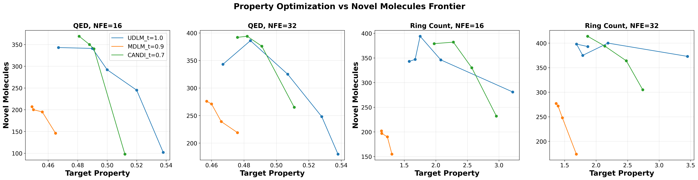

Prior guidance methods for discrete diffusion require specially trained classifiers for each diffusion model.
Furthermore, the gradient information must be adapted to suit the categorical distributions used at inference for pure discrete diffusion methods
In contrast, CANDI can leverage off-the-shelf continuous classifiers for guidance with simple gradient addition.
We use the QM9 molecular dataset and compare against MDLM and UDLM using diffusion classifiers. We train classifers on two chemical properties: QED and ring count. For CANDI, we train a normal classifier without any diffusion-specific augmentations.
We visualize frontiers in terms of target property value (coherence) and novel molecules (diversity). We ablate over temperature and show the best frontiers for each method.
üí• Competitive Performance with Off-the-Shelf Classifiers

Key observations:
- Using an off-the-shelf continuous classifier, CANDI achieves comparable performance to a discrete diffusion method with a specially trained classifier.
- CANDI has a strictly better frontier when compared to MDLM for both properties and both NFE